O site plug.dj oferece um espaço onde você pode criar festas virtuais e se tornar um DJ, criando playlists de vídeos do YouTube ou músicas do Soundcloud com uma facilidade incrível. Neste serviço, você pode criar sua própria sala ou entrar em outra sala que já tenha sido criada, e assim convidar seus amigos do Twitter e do Facebook para conversar com pessoas do mundo todo, enquanto ouve e toca suas músicas preferidas.
Passo 01. Ao entrar em no plug.dj você verá a tela abaixo. Aqui o site dá três opções de login: com sua conta do Facebook, Twitter ou Google; bem simples e sem nenhuma demora.
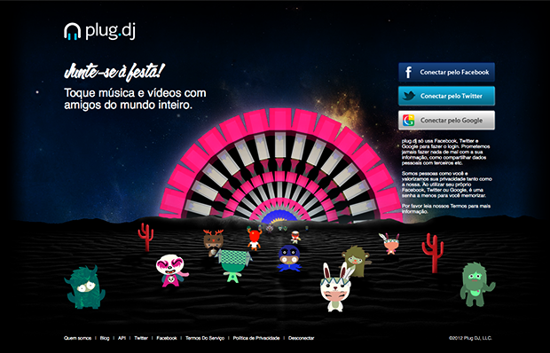Passo 02. Dentro do site você verá a tela abaixo, oferecendo as salas disponíveis. Os números indicam a quantidade de pessoas conectadas em cada sala, ao lado o nome da sala, quem é o criador da sala e o que está tocando no momento. Caso você tenha fãs ou seja seguidor de algum usuário (falaremos disso mais adiante), você verá uma indicação de que um amigo seu está naquela sala no momento.
No campo superior você pode procurar, pelo nome, uma sala ou usuário. Se você não gostar de nenhuma sala disponível, basta criar sua própria sala clicando em "Criar Sala";
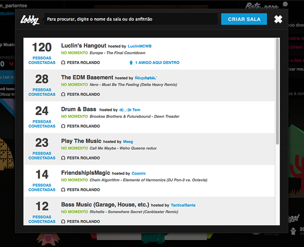Passo 03. Ao clicar em "Criar Sala" você verá esta tela onde é possível dar um nome e definir se ela será pública ou privada.
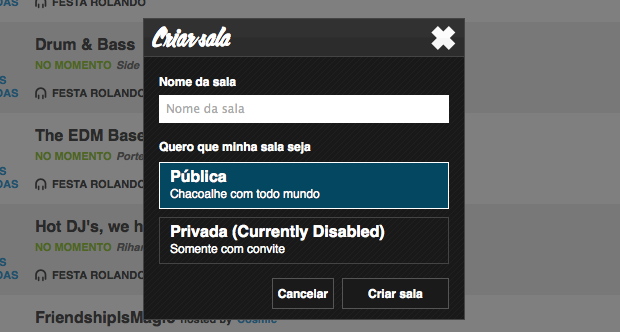Passo 04. Assim que sua sala for criada ela deverá ficar como a da foto abaixo. Como podemos ver, não existe ninguém além de você nela. Vamos então criar uma playlist de músicas e convidar os amigos para começar a festa;
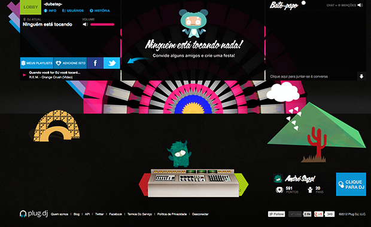Passo 05. A primeira etapa será clicar em (1) "Meus Playlists". Assim que você tiver alguma música e estiver tocando com outras pessoas, ou quando outro DJ estiver tocando, caso você goste da música você pode clicar em (2) "Adicione Isto" para adicionar a música em sua playlist. As outras opções presentes no painel são para compartilhar e convidar seus amigos do (3) Facebook e (4) Twitter. Vamos então clicar em (1) "Meus Playlists" para começar a montar nossa playlist;
Passo 06. A seguinte tela abrirá (abaixo). Aqui temos (1) o campo de busca, para procurar músicas no YouTube, SoundCloud, ou (2) importar playlists já criadas no YouTube, SoundCloud ou Turntable. As playlists ficam na (3) coluna esquerda. Para criar uma nova playlist basta clicar no botão (4) "+ Novo", dar um nome e pressionar Ok.
O resultado das buscas feitas no campo (1) aparecem no (5) centro da tela, assim como o conteúdo das playlists. Ao passar o mouse ao lado de um dos resultados você terá o ícone para (6) adicionar a música na playlist selecionada ou (7) pesquisar outros resultados relacionados. Acimam você encontra o (8) número de páginas com resultados e o (9) botão para fechar a tela.
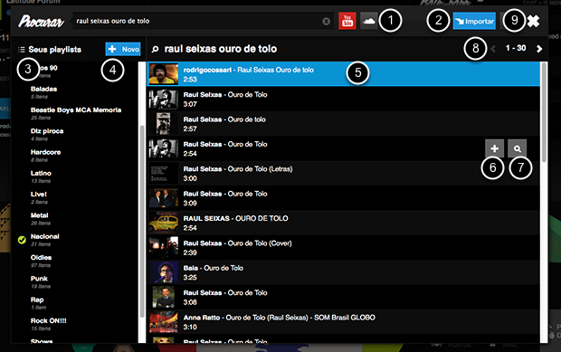Passo 07. Agora basta clicar em (1) "Clique para ser dj" e começar a soltar suas músicas, ou entrar na lista de espera para tocar suas músicas.
Clicando sobre o seu (2)nick, você pode alterar seu nome, idioma do site, seu status (que pode ser disponível, ocupado, ausente e adormecido) e ativar a tradução do Chat. Do lado existe o (3)ícone do seu avatar, onde você pode trocar a roupa do seu avatar. para liberar novas roupas você precisa de mais pontos, que são conseguidos quando você toca para uma plateia ou curte músicas;
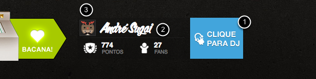Passo 08. No canto superior esquerdo da tela você encontra o painel que reúne diversas informações sobre a sala e o que está rolando nela.
Clicando em (1) "Lobby" você tem acesso a lista de todas as salas do Plug.dj, caso queira mudar de sala ou ver se os seus amigos estão em outras salas. Clicando em (2) "Info" você acessa as informações básicas da sala e vê quem criou a sala, a descrição, se a cabine do dj está trancada (permitindo que apenas o dj toque) e quantas músicas cada dj pode tocar por vez.
Em (3) "Usuários", uma lista mostra todos os usuários que estão no momento dentro da sala. Já em (4) "História" você confere todas as músicas que foram tocadas dentro da sala e a porcentagem de pessoas que gostaram da música, com a possibilidade de assistir o vídeo e favoritá-lo. Ao lado você vê o (5) nome do dj que está tocando no momento e do outro lado o (6) volume do som que está tocando na sala. Abaixo, temos o (7) nome da música e banda, (8) tempo restante para a música acabar, (9) os indicadores de aprovação, reprovação e de quantas vezes a música foi favoritada.
Para favoritar uma música basta clicar em "Adicione Isto" (como falamos no passo 05). Na parte inferior (10) você (e só você) vê o que tocará. Assim que for sua vez de mandar a música, clicando na seta rosa você terá acesso a sua playlist atual e poderá mudar a música;
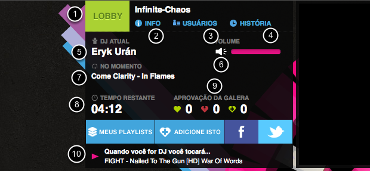Passo 09. Quando você estiver tocando uma pequena mudança ocorrerá no box: sairá a caixa "Adicione Isto" e aparece a caixa "Saltar Isto", ou seja, quando você estiver tocando pode saltar a sua vez, dando a vez para o próximo dj;
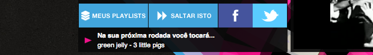Passo 10. No canto superior direito da tela você encontra o Chat. Sempre que alguém citar seu nome você ouvirá um (1)sinal sonoro, que pode ser desativado ou não.
O Chat possui tradução automática, então fica em fácil conversar com pessoas de outros países, se o seu inglês estiver enferrujado. Basta mandar sua mensagem na parte inferior da (2)caixa de Chat. Caso queira expandir o Chat, clique (3) na pequena seta no canto inferior direto da caixa.
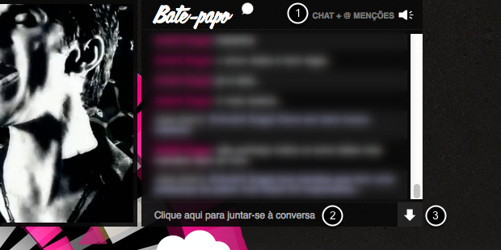Passo 11. Para ver o nome de algum participante basta passar o mouse sobre seu avatar. Você verá o nome, número de pontos e quantos fãs a pessoa possui;
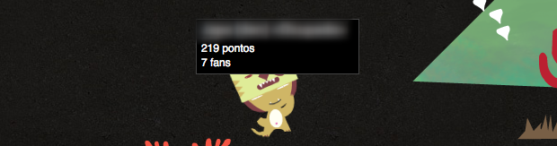Passo 12. Clicando sobre o avatar de um usuário você verá algumas opções interessantes (algumas opções só aparecerão se você for o dono da sala ou moderador).
Você pode ser ou não fã de um usuário, mencionar o usuário em uma mensagem (ele receberá um sinal sonoro para saber que existe uma mensagem com o nome dele), e caso você seja o dono da sala ou moderador poderá remover o usuário da lista de dj’s que podem tocar, além de chutá-lo da sala para banir o usuário, ou conceder a moderação;
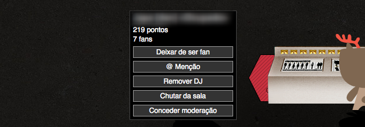Passo 13. Quando outro dj estiver tocando, você pode votar e dizer se a música é "Bacana!" ou "Chata". Se a maioria da sala votar em Chato, o dj é retirado e o próximo da fila toca.
Agora que você já sabe tudo sobre o plug.dj é só criar sua playlist e participar da brincadeira.
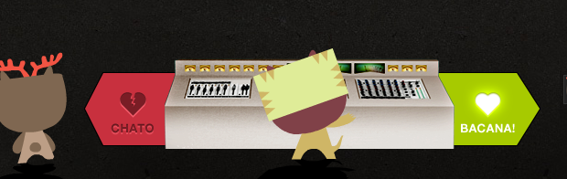